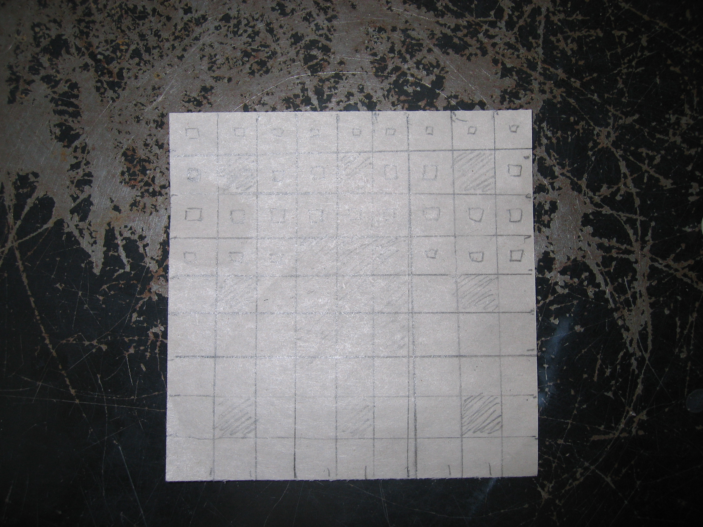
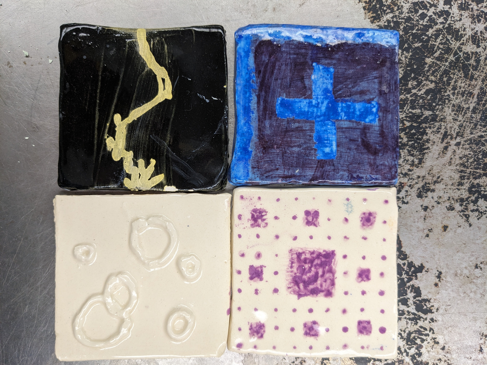

Technique tiles (or attempt thereof)
We tried a variety of surface designs on square (3" x 3" x .25"?) tiles. There are so many differently useful ways to UG (underglaze) / glaze a piece of clay... (Probably, those techniques are easiest/most essential?)
Inspiration: general
The projects weren't too complicated, so I went with the first sensible idea off the top of my head.
Sgraffito
A "subtractive technique", where upper layers of UG are partially scratched away on leather-hard clay, revealing the lower layers.Inspiration
Mainly the abundance of grid problems in math olympiads. I immediately thought of a few recent problems, and settled on this one, aka TSTST 2023/3. This one haunts me in particular since I vividly remember being stumped by it during the actual test. Another reason I chose that picture was because two colors and a not-very-precise picture meant there was room for error.
Dev't (aka commentary)
Reflect
It didn't turn out the absolute worst, but in the spirit of self-criticism, a few things to be improved:
- Clay was not kept moist. Instead of asking for / using Ziploc bags, I wrapped my WIPs in plastic wrap, which completely failed to preserve moisture. In later projects I made sure to bag every single work.
- UG was excessive, to the point where there were very visible cracks. (I still don't know how to apply it properly oops)
- Glaze applied insufficiently. Patches of the transparently-glazed tile were visibly rough, and felt like (and were basically) bisqueware.
Resolved by clear-glazing again; in later projects, must copiously apply glaze.
Slip trail
For us, used a squirt bottle containing slip to spray a design. (Slip is a fancy word for watered-down clay, and is used as glue. As an example one might repair a broken work of clay with that.)
Inspiration
Wanted something simple yet non-math. I thought of my friend's LaTeX template, and found it not completely trivial to make.
Dev't
- Used slip squirt bottle as instructed. Design involved intersecting circles;
- intersection areas were too "high" / "thick", hence had to scrape away the excess slip there.
Reflect
At time of making, still hadn't placed soft, moist clay in airtight containers. As the clay was left in a non-airtight locker for a day, it was hard to "smooth" the tops of the thing.
Wax resist
Inspiration
Wanted something not too complicated, but nonmath again. I suddenly thought of the the "electric" banner at the end of a certain video game. This also would mean a limited amount of needed wax resist...
Dev't
Everything went according to plan.
Reflect
Still things to work on.
- UG not applied evenly. To this day, I still don't know how. As a result, slight feel-able unevenness after completion.
Monoprint
To spare us ceramic artists the pain of having to paint a design onto some surface directly (like a curved vase surface, say), monoprint exists to save the day- paint it on a piece of newsprint with UG, then transfer it to any one surface! Single-use only.
Inspiration
I asked my teacher what kinds of things were used for monoprint, to which the response was rather precise designs. Hence, my math brain immediately thought of fractals. Since tiles are squares, I had to pick a square fractal, and I did the first thing that came to mind as a design- Sierpinski's carpet.
Dev't
Went as instructed. I was almost going to slap on another layer of white UG, when my teacher observed that bisqueware/glazeware is already white. So, I was spared the burden of adding another layer! The newsprint I used:  Printing had some errors (think of a bad toner); corrected by adding UG directly in missing / weak spots.
Reflect
Went rather smoothly. Some things to improve:
- Tile wasn't completely flat (again); have yet to discover a solution...
- Accidental UG drops of other colors; could've cleaned nearby paintbrushes...
Create: photo of all tiles
by row (top to bottom): wax resist, sgraffito; slip trail, monoprint;
